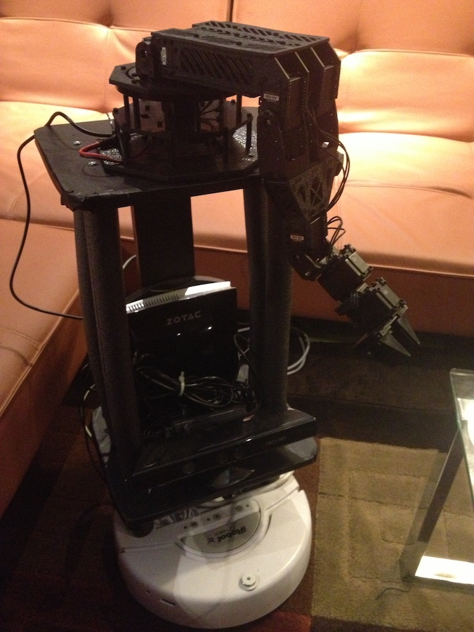
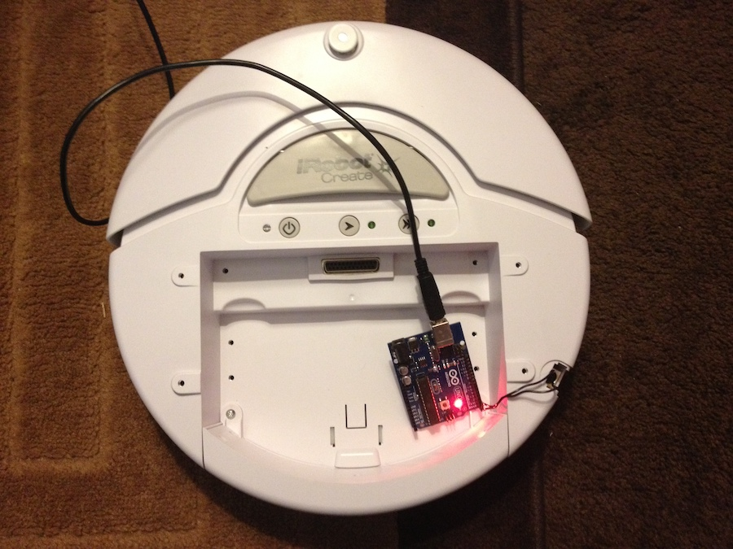
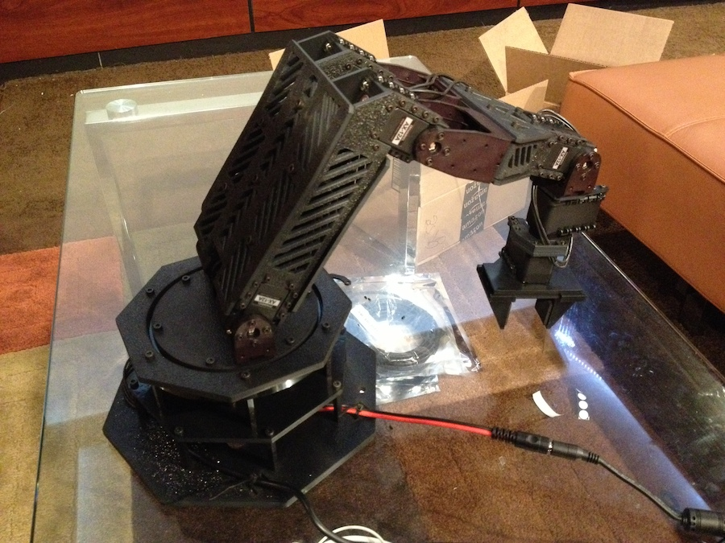

Building an autonomous robot assistant
When we think of ways in which we could use a robot to improve our lives, we usually think of humanoid robots that do our menial tasks, like folding clothes. Unfortunately, the computational resources required to build an image recognition system that could identify clothes and deduce the mechanical steps required to fold them into a certain shape are so immense that such robots will not exist for quite some time, the closest thing being the towel-folding robot made by researchers at Berkeley that takes approximately 25 minutes to fold each towel. Such is the nature of Moravec’s paradox, which is summed up quite elegantly by Steven Pinker in his book The Language Instinct:
As the new generation of intelligent devices appears, it will be the stock analysts and petrochemical engineers and parole board members who are in danger of being replaced by machines. The gardeners, receptionists, and cooks are secure in their jobs for decades to come.
Trying to apply artificial intelligence to complicated tasks like folding laundry or cooking food is difficult and pointless. A human will always be able to outperform a computer in that regard, given the current state of technological advancement. Instead of jumping on the bandwagon of investing millions of dollars into building clunky, expensive robots that will be out of the reach of the consumer for many decades (like Intel’s robotic butler HERB), my goal was to build a reasonably-priced mobile platform that can be used as a generic way to give motion to my robotics and AI projects. What I ended up with was this:

Honestly, human beings are quite adept at taking care of themselves (myself included), but sometimes its nice to have a sidekick that can drive around and interact with the world while simultaneously not eating all the food out of your fridge. Did I mention that you can program this sidekick in Python? In this blog post, I’ll describe how I made the generic mobile platform pictured above, which currently carries a mini Linux box, a Kinect sensor, and a robotic arm, and was previously used to carry around two Arduino boards and a coffee maker.
The essentials
For this project, I’m using an iRobot Create ($240), which is essentially a Roomba without the vacuum and the hefty price tag. With two Arduino microcontrollers ($22 each) and a pair of XBee wireless communication modules ($30 each), you can remotely control the iRobot using its open serial interface. In my current setup, I am controlling the robot with a Zotac mini running Ubuntu 10.4 ($250) and a Microsoft Kinect sensor ($150). There is also a power system (~$60) that provides a source of mobile AC power to the electronics on board.
The iRobot is a great solution for anyone who needs a fast and robust driving base for a project or just a spunky looking RC vehicle to do your bidding. The Arduino option allows a cheap, robust, and low-power way of communicating with the robot and attaching Arduino-related peripheral devices to the robot. This is also my preferred method because it allows the Arduino to draw power from the iRobot’s onboard serial port, unlike the mini computer option which requires the heavy portable AC unit from a speaker backpack to be lugged around as well.
I started by just experimenting with Arduino control of the iRobot, which was quite simple and well documented.

I then improved the Arduino setup with two Arduinos communicating over the SPI interface, with one Arduino connected to an XBee wireless transmitter/receiver which occupied its serial port, and the other sending serial messages to the iRobot. I also had another transmitter connected by USB to my computer.
I then used Acme rods and an MDF sheet that I cut on my scroll saw to secure a platform above the robot. The iRobot has a relatively small load capacity after which the motors stop working effectively, so it was necessary to keep this part as light as possible.
I then used pipe insulation and black contact paper to improve the exterior surface of the robot.
I added one more platform on top and trimmed the Acme rods to remove any excess sticking out above the platform.
I then mounted the Zotac mini computer, Kinect sensor, and power supply.
I got this robotic arm design from a Chicago mechatronics company called Trossen Robotics. They laser cut all the parts for you, so it only requires assembly and sourcing of the motors/various parts. This was the most tedious part of the process and I quickly learned that the resulting arm could still only pick up light items - a cup half full of coffee seemed to put excessive strain on the motors.

Regardless, this was a fun project and I was able to experiment with environment mapping and other fun applications using this platform.